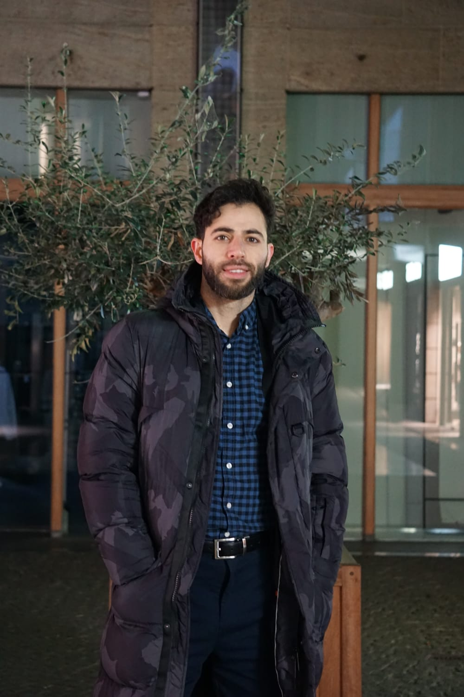

Between Equations & Verses

PhD · RWTH Aachen University
I build hybrid models that add data-driven learning to model-based exit wave reconstruction — a problem from electron microscopy and a variant of phase retrieval — by unfolding classical optimization algorithms into trainable neural networks (deep unfolding). I implement these in Python / PyTorch and study how they behave — for example, how well they generalize to unseen data.
M.Sc. in Scientific Computing — Technische Universität Berlin · M.Sc. in Mathematics, Modeling & Simulation — Université de Pau et des Pays de l'Adour, France · M.Sc. in Applied Mathematics — Lebanese International University. I'm also an Arabic poet — Rashfato Alami gathers more than 80 romantic poems.
Publications
A generalization bound for exit wave reconstruction via deep unfolding
Preprint · arXiv 2025
Abstract
Transmission Electron Microscopy enables high-resolution imaging of materials, but the resulting images are difficult to interpret directly. One way to address this is exit wave reconstruction — the recovery of the complex-valued electron wave at the specimen's exit plane from intensity-only measurements — an inverse problem with a nonlinear forward model. We consider a simplified forward model making the problem equivalent to phase retrieval, and propose a discretized regularized variational formulation. To solve the resulting non-convex problem, we employ the proximal gradient algorithm (PGA) and unfold its iterations into a neural network, where each layer corresponds to one PGA step with learnable parameters. This unrolling approach, inspired by LISTA, enables improved reconstruction quality, interpretability, and implicit dictionary learning from data. We establish generalization error bounds of order $\mathcal{O}(\sqrt{L})$.
Curriculum Vitae
PhD Researcher — Computational Mathematics & Machine Learning
RWTH Aachen University · IGPM · SFB 1481
Education
Focus & tools
Highlights
Browse the full CV
Arabic Romantic Poetry
The first volume of my romantic poems — more than 80 pieces. المجموعةُ الأولى من قصائدي الرومانسية، أكثرُ من ٨٠ قصيدة.
الخَرَابُ وَالرَّحِيلُ
وَإِلَيْكَ رَحَلْتُ بِلَا شَكْوَى، وَكَأَنِّي خُلِقْتُ أَهْوَاكَ ...
وَإِلَيْكَ رَحَلْتُ بِلَا شَكْوَى، وَكَأَنِّي خُلِقْتُ أَهْوَاكَ
قُلْ لِي مَا حَلَّ بِقَلْبَيْنَا، وَكَيْفَ نَسِيتَ شَوَارِعَنَا
هُنَا كُنَّا نَتَعَانَقُ حُبًّا، وَهُنَا أَهْدَيْتَنِي أَزْهَارًا
كَيْفَ مَزَّقْتَ عَوَاطِفَنَا، وَكَتَبْتَ رَحِيلَ ذِكْرَانَا
أَصْبَحْتُ بَعْدَكَ شَاعِرَةً، وَدُمُوعِي أَضْحَتْ أَبْيَاتًا
كَيْفَ كَتَبْتَ نِهَايَتَنَا، وَرَحَلْتَ دُونَ اسْتِئْذَانَ
ظُلْمُ الأَفْئِدَةِ حَرَامٌ، وَأَشَدُّهُ لَوْ تَدْرِي عِقَابًا
الهَجْرُ وَالْعَوْدَةُ
مَا كُنْتُ عَيْنَيْكِ وَكُنْتُ الْحُبَّ الأَجْمَلِ ...
مَا كُنْتُ عَيْنَيْكِ وَكُنْتُ الْحُبَّ الأَجْمَلِ
أنا لَسْتُ أَدْرِي فِي الْهَوَى أَيُّ الْحَنِينِ أَنْتِ
كَيْفَ أَتَيْتِ وَكَيْفَ عَبَرْتِ وَكَيْفَ هَجَرْتِ
فِي الْحُبِّ لَا مَهْزُومٌ وَلَا مُنْتَصِرِ
وَأَذُوبُ فِيكِ بِكُلِّ دَقِيقَةٍ وَأَبُوحُ لِلْأَحْضَانِ كَيْفَ كَسَرْتِنِي
وَأَعُودُ مِنْ بَعْدِ الْوِصَالِ بِقُبْلَةٍ لَا تُفَارِقُنِي حَتَّى نَنْتَهِي
فِقْدَانُ الحَبِيبِ
كُلُّ مَاضِينَا قَدْ هَانَ وَتَعْزِفِينَ مَوْتِي أَلْحَانَ ...
كُلُّ مَاضِينَا قَدْ هَانَ وَتَعْزِفِينَ مَوْتِي أَلْحَانَ
أَيْنَ الحَنِينُ، أَيْنَ العِنَاقُ، وَأَيْنَ كُلُّ مَا كَانَ؟
نَهَدَاتُكِ عَلَى صَدْرِي أَيْنَ هِيَ الآنَ؟
كُتِبَ الرَّحِيلُ وَالْوَقْتُ قَدْ حَانَ
قِصَصُ الهَوَى تُبْكِينَا، تُعَذِّبُنَا أَحْيَانًا
لَا تَرْحَلِي، فَبَعْضُ بَدَايَاتِ الحُبِّ نِيسَانَ
وَلَكِنْ، لَا تَقْتُلِي نَفْسَكِ انْتِقَامَ عَاشِقٍ وَلْهَانَ